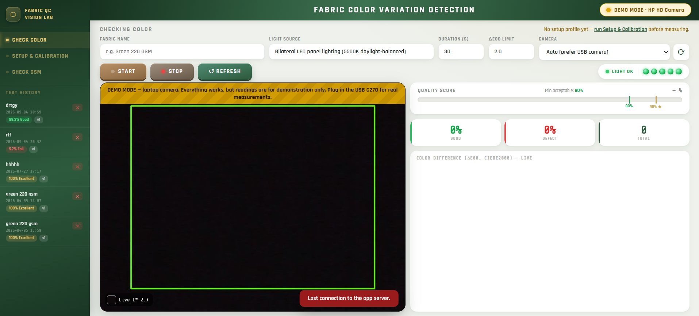

Researcher · Machine Vision for Textile Quality
Md Rasel Khandaker
I build low-cost vision systems that measure fabric colour objectively, so that small and medium textile factories can check shade consistency without an expensive laboratory instrument.

Low-Cost Real-Time Fabric Color Variation Detection Using Computer Vision
Python desktop application with a Logitech C270 USB webcam and a 5500 K LED booth. All research measurements are taken with this system.
- CIEDE2000 colour difference, with ΔE*ab and CMC(2:1)
- Five readiness checks before every test
- Pass/fail limit from the system's measured noise
- Reports with per-frame CSV export
Five dyed samples beside their reference. Side by side they look alike, but at a CIEDE2000 limit of 2.0 two of them fail. The system makes that call from a webcam image in real time.
Colour differences computed with CIEDE2000 from the sRGB values shown; limit ΔE00 = 2.0.
Try the method yourself
A simplified browser version of the same method. It uses your own camera and room light, so results are indicative only — not measurements. Research measurements are made with the Python desktop system.
- Press Start camera and allow camera access.
- Hold one plain-coloured fabric so it fills the green box.
- Type a fabric name and press Start.
- Bring in a different shade and watch the graph turn red.
- Adoption of IoT-Enabled Quality Monitoring System in a Smart Factory M. R. Khandaker and S. P. A/P Thiagarajah · 6th International Conference on Technology and Innovation Management (ICTIM 2026), Multimedia University, Malaysia Presented
- Low-Cost Real-Time Fabric Color Variation Detection Using Computer Vision M. R. Khandaker · targeting an IEEE venue In preparation